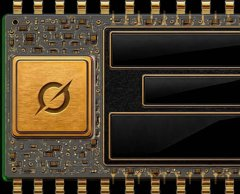
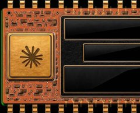
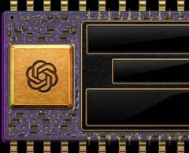
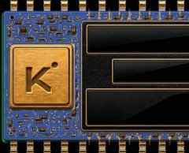

One book for the Overview: a night trading floor of painted circuit boards (the NVIDIA bet chip is the reference), one warm key light, green and red rim lights, gold only for headings and #1. These are the rules every part obeys. Phone first (390), desktop 1280.
Type: three faces
Headline 40Four AIs call earnings.
Section head 34Meet the models
Narrator 20RANKED BY SEASON P&L.
Big number 28+$148,480
Table figure 1645-27 · 63%
Body 15Every trade is posted on X before the report.
Label 12Next close · nothing under 12px
Bangers = heads and the narrator. Anton = numbers. Shantell Sans = text. The "Earnings Zeason" lockup is the logo, exempt. Section heads share one size (34 at 390, 64 at 1280); the bet keeps B2's size.
Colour: one meaning each
#04070e voidthe ground, the logo black
—
#0c0f17 panelpanels, sockets, the bar
—
#f8f0d9 creamtext; the primary button
17.7:1
#ffd21f goldheadings and #1 only (and the narrator box, ink on it 13.5:1)
13.9:1
#03c870 greenright / profit only
9.1:1
#ff3a31 redwrong / loss only; on the green board its tables sit on a 55% black plate (4.1 → 5.1:1)
5.7:1
Ratios against the void. Never a white or pale ground.
Models: chip = line
Each model brings its colour in Meet the models (its chip's board); the charts carry the same colour, plus a pattern for colour-blind readers. Never green, red or gold.

Grok · steel solid

Claude · clay dashes

GPT · violet dots

Kimi · sky solid
GPT's board is repainted from green to violet (green means profit). Claude stays clay (its own brand colour) instead of the end's pink. On the board: 9.2 / 4.9 / 4.7 / 5.6:1.
The narrator box
1Each AI goes long or short before the report.
Ranked by season P&L. $100K on every trade.
One box per section, one line, ≤ 14 words.
The red number tab only in How a round works (1–4: a sequence). Nowhere else.
It explains; it never carries data. Data lives on the objects.
The gutter and the rhythm
28last line of a section → gutter (44 on desktop)56the gutter: torn dark paper, edge to edge, same at every joint28gutter → the next section's heading (44 on desktop)1one gutter per joint; doubles are dropped
The address is printed on the torn paper, so a screenshot of any section carries its source.
Shows after the first screen, slides away while you scroll down (never on a number you are reading), back on scroll up, gone over the end block. The CA is shown whole, never cut in the middle.
Motion: one mover per screen, only if it carries a fact
The founder in the chipOnly the portrait nearest the screen's centre plays; the others hold still like paintings. Fact: a living rival.
The latest front pageThe newest round's film plays muted when it is the focus; at rest it shows the film's first frame, so the move is said once (the headline). Fact: the newest round.
The countdownTicks each second on the bet chip. Fact: the bet is coming.
Nothing else moves: no pulsing dots, scan lines, glints, crawls or pointing hints. With reduced motion nothing plays (posters only).
Words and trust
trade for what an AI does each round; W-L = right or wrong direction; a round's winner is Closest: Grok; the bet says #1.
One "next": the next close and its companies (the header pill and the end block read the same source).
Proof where they look: "Every trade is posted on X before the report" on the first screen and at the end. Risk said once: "The pool can be wiped out".
Never: moon, 100x, guaranteed, emoji, return promises. 44px taps; 4.5:1 text; colour never alone (W/L letters, line patterns).